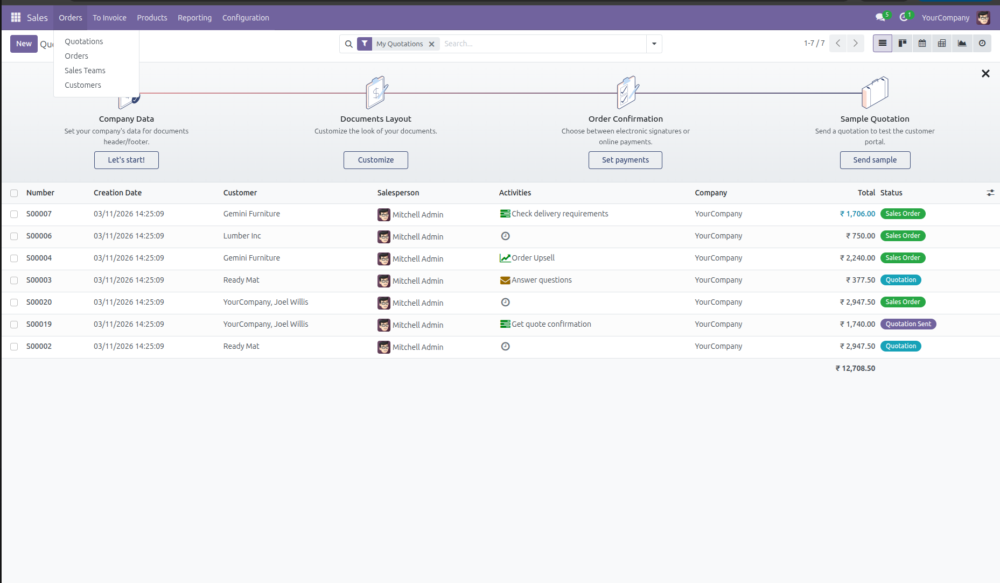
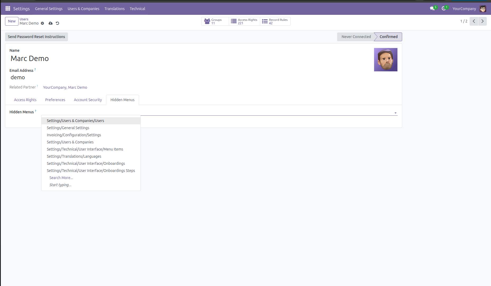
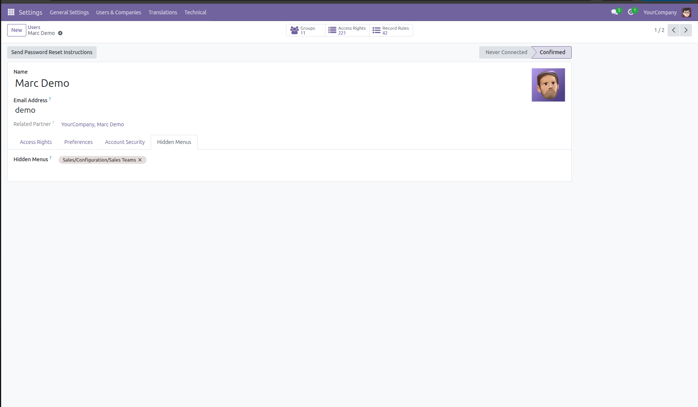
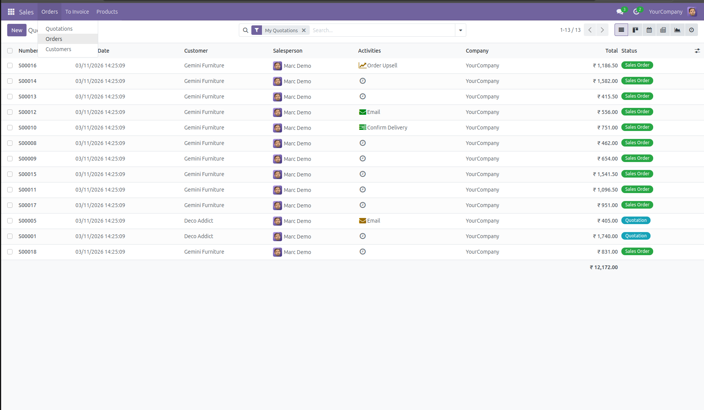

📌 Module Overview
This module allows administrators to hide specific menus for selected users in Odoo.
It helps improve security, simplify navigation and provide role-based UI visibility.
🚀 Key Features
Hide Menus User Wise
Simple User Configuration
Admin Bypass
Works With All Odoo Apps
Lightweight Module
Odoo 17 Compatible
📊 Business Use Cases
- Restrict accounting menus for non-finance users
- Hide sensitive menus for junior staff
- Simplify interface for specific departments
- Improve security by controlling menu visibility
🖼 Module Screenshots
Below are screenshots showing how the module works.




⚙️ Installation Guide
- Copy the module into your Odoo custom addons folder
- Restart the Odoo server
- Go to Apps and Update Apps List
- Search for User Wise Menu Visibility Control
- Click Install